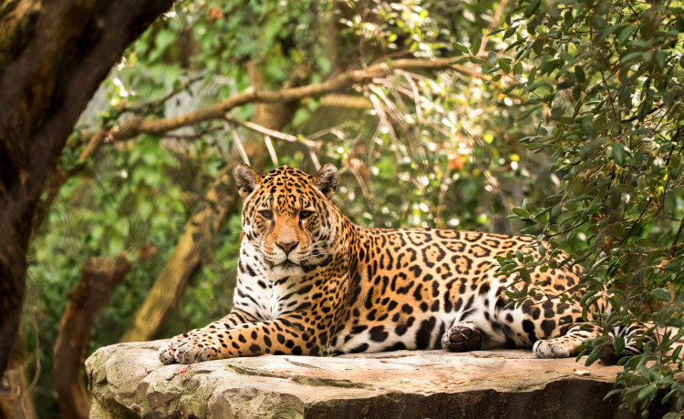
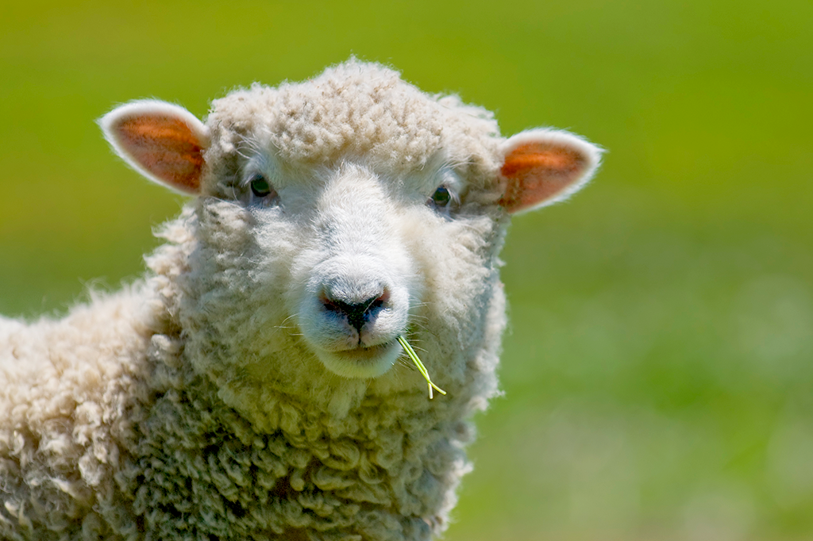

Onça
Panthera onca
| Reino: | Animalia |
| Classe: | Mammalia |
A onça-pintada (português brasileiro) ou jaguar
(português europeu) (nome científico: Panthera onca), também conhecida como
onça-preta (no caso dos indivíduos melânicos), é uma espécie de mamífero carnívoro da
família Felidae encontrada nas Américas. É o terceiro maior felino do mundo, após o tigre e o leão, e o
maior do continente americano. Apesar da semelhança com o leopardo (Panthera pardus), a
onça-pintada é evolutivamente mais próxima do leão (Panthera leo). Ocorre desde o sul dos Estados
Unidos até o norte da Argentina, mas está extinta em diversas partes dessa região atualmente. Nos Estados
Unidos, por exemplo, está extinta desde o início do século XX, mas possivelmente ainda ocorre no Arizona. É
encontrada principalmente em ambientes de florestas tropicais, e geralmente não ocorre acima dos 1 200 m de
altitude. A onça-pintada está fortemente associada à presença de água e é notável como um felino que gosta
de nadar.
É um felino de porte grande, com peso variando de 56 a 92 kg, podendo chegar a 158
kg, e comprimento variando de 1,12 a 1,85 m sem a cauda, que é relativamente curta. Fisicamente semelhante
ao leopardo, dele se diferencia pelo padrão de manchas na pele e pelo maior tamanho. Existem indivíduos
totalmente pretos. Caça formando emboscadas. Tem uma mordida excepcionalmente poderosa, mesmo em relação aos
outros grandes felinos. Isso permite que ela fure a casca dura de répteis como a tartaruga e de utilizar um
método de matar incomum: ela morde diretamente através do crânio da presa entre os ouvidos, uma mordida
fatal no cérebro.
É um animal crepuscular e solitário. É um importante predador no topo da cadeia
alimentar e pode comer qualquer animal que seja capaz de capturar, desempenhando um papel na estabilização
dos ecossistemas e na regulação das populações de espécies de presas. Porém, tem preferência por grandes
herbívoros, podendo atacar o gado doméstico. Frequentemente convive com a onça-parda (Puma
concolor), influenciando os hábitos e comportamento deste outro felino. A área de vida pode ter
mais de 100 km², com os machos tendo territórios englobando o de duas ou três fêmeas. A onça-pintada é capaz
de rugir e usa esse tipo de vocalização em contextos de territorialidade. Alcança a maturidade sexual com
cerca de 2 anos de idade, e as fêmeas dão à luz geralmente a dois filhotes por vez, pesando entre 700 e 900
gramas. Em cativeiro, a onça-pintada pode viver até 23 anos, mais do que em estado selvagem.
A IUCN considera a espécie como "quase ameaçada", por sua ampla distribuição
geográfica, mas suas populações estão em declínio, principalmente por causa da perda e da fragmentação do
seu habitat. Entretanto, localmente ela pode estar em sério risco de extinção, como em áreas da
América Central e do Norte e na Mata Atlântica brasileira. O comércio internacional de onças ou de suas
partes é proibido, mas o felino ainda é frequentemente caçado por fazendeiros e agricultores na América do
Sul. Apesar de seu número reduzido, a sua distribuição geográfica ainda é ampla e há boas chances de
sobrevivência da espécie a longo prazo na Amazônia e no Pantanal. A onça-pintada faz parte da mitologia de
diversas culturas indígenas americanas, incluindo as dos maias, astecas e guaranis e a sua caça ainda é uma
atividade carregada de simbolismo, principalmente entre os pantaneiros.
Ovelha
Ovis aries
| Reino: | Animalia |
| Classe: | Mammalia |
A ovelha (Ovis aries) é um mamífero ruminante bovídeo da
sub-família Caprinae. O carneiro é o macho da ovelha e os juvenis são
cordeiros, anhos ou borregos.
É um animal de enorme importância econômica como fonte de carne, laticínios, lã e
couro. Criado em cativeiro em todos os continentes, a ovelha foi domesticada na Idade do Bronze a partir do
Urial (Ovis orientalis), que vive actualmente nas montanhas da Turquia e Iraque, ou de outras
espécies da ovinos da região.
As ovelhas são, quase sempre, criadas em rebanhos. O manejo requer cuidados, seja
pelo fato de se tratar de um rebanho grande, ou por serem animais sensíveis. Nas regiões mais frias, como no
sul do Brasil, o cuidado com as crias recém-nascidas deve ser intenso, já que a época de partos coincide com
os meses de inverno, quando se tratar de raças que possuem sazonalidade reprodutiva.
Além do frio, os criadores devem atentar para raposas, lobos e outros predadores,
que cercam as fêmeas e roubam-lhes os filhotes. A lã, retirada no início do verão, importante fonte de renda
para o criador, torna a crescer, garantindo ao animal a sua própria defesa ao frio.
Basicamente, a ovelha (fêmea) é um animal dócil, e sem nenhum mecanismo natural de
defesa; o que deve ter influenciado para, na cultura popular, estar associada à ideia de inocência. No caso
dos carneiros (machos) é necessária alguma precaução com alguns animais mais agressivos, pois estes podem
usar as hastes de forma perigosa. As ovelhas não tem os sentidos aguçados como outros animais. Se destacam
sua Audição baixa, olfato reduzido, sua visão é também inferior a outros ovinos. No entanto sua memória é de
grande capacidade.